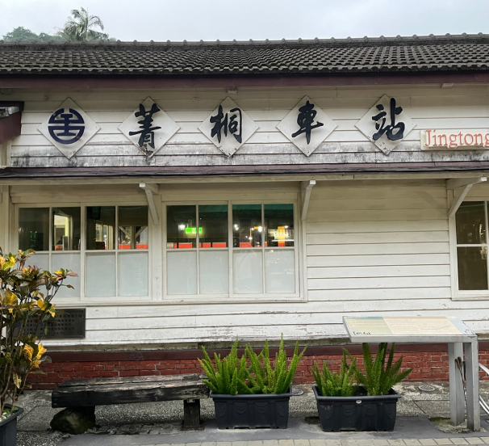
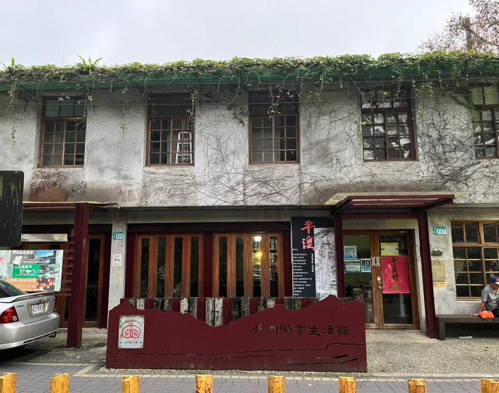

菁桐電子天燈館
造型獨特的菁桐電子天燈館是菁桐小鎮的地標，建築特色結
合平溪天燈的文化，而奇特的外觀總是第一眼吸引旅人的目
光，當夜晚來臨時，絢麗的燈光秀隨之播放，為這座寧靜的
山中小鎮帶來熱鬧的饗宴，就像一盞祈福的天燈佇立在菁桐
老街的尾端，微微的在為平溪發光祈福。
菁桐電子天燈館是由9公尺高的玻璃帷幕與近15萬顆LED所
構成，1樓設有公廁，2樓為旅客服務櫃台及輕食餐飲賣店，
3樓則有景觀平台，可將周遭的景色一覽無遺。
菁桐電子天燈館的營業時間為下午4點到晚上7點，每整點會
播放燈光秀，除了會介紹天燈緣起和平溪地方的特色，亦也提
供了旅客客製化的「LED許願天燈」，旅客可以將自己的祝
福、相片放在天燈明信片上面，看見心願在天燈主體上冉冉升
空，與放一般的傳統天燈有截然不同的感受，寫完的明信片還
能帶回當作紀念品。
【營業時間】
(一)旅客服務櫃台及賣店：10:00–19:00 (每周三及除夕公
休)(二)LED許願天燈秀：16:00-19:00 (每周三及除夕公休)
LED許願天燈販賣地點：菁桐電子天燈館
天燈施放場次：每小時3波，每波施放10盞
施放費用：150元
【施放流程】
Step1：需向LED天燈販賣處預約，並於預約時間1小時前抵
達畫明信片。
Step2：把寫好心願的明信片交給工作人員，工作人員會為
你進行明信片的掃描建檔。
Step3：於預約時間至天燈館廣場觀賞。

菁桐車站
菁桐車站是平溪線的最後一站，相較於十分、平溪車站顯得寧
靜許多，緊鄰老街的日式木造車站，散發著濃濃懷舊的氣息，
不僅成為廣告、電影的拍攝地，更是引來許多國內外的 旅人前
來拍照留念。
1929年建設的菁桐車站，這座在2003年被列為古蹟的車站，過
去是運送煤礦的重要設施，來到這裡，不妨到此喝杯咖啡，看菁
桐過往的礦業歷史，也可以在漫步在歷史悠久的鐵軌上，享受菁
桐風光。
菁桐車站雖然範圍不大，但是周圍卻有許多非常可愛、有趣的
小角落，都非常適合的拍照。

菁桐礦業生活館
平溪區因煤礦開採而興盛，亦因煤礦停採而沒落，用過去的臺
鐵員工宿舍，重新整修成的菁桐礦業生活館，裡面展示了菁桐
礦業的發展歷程，現今區內的礦場皆已停擺，卻遺留下可觀的
產業遺址，成為地方的特色資源，
菁桐礦業生活館的成立，提供了一個場所典藏、展示這些地
方團隊多年來的成果資料， 未來將進一步擴展層面，結合天
燈民俗、基隆河上游的生態景觀、瀑布壺穴特殊地質，以及
傳統染料工業，凸顯地方特色，透過平溪支線鐵路的便捷交
通，帶動地方文化及觀光產業之發展。
菁桐礦業生活館的後部外觀布滿了藤蔓，讓建築物充滿了生
氣，喜歡文清風的旅客這裡可以很好拍照。